Properties¶
Curve Properties can be set from the Object Data option in the Properties Header (shown below in blue).

Shape¶

Curves Shape panel.
- 2D and 3D Curves
- By default, new curves are set to be 3D, which means that Control Points can be placed anywhere in 3D space. Curves can also be set to 2D which constrain the Control Points to the Curve’s local XY axis.
- Resolution
The resolution property defines the number of points that are computed between every pair of Control Points. Curves can be made more or less smooth by increasing and decreasing the resolution respectively. The Preview U setting determines the resolution in the 3D View while the Render U setting determines the Curve’s render resolution. If Render U is set to zero (0), then the Preview U setting is used for both the 3D View and render resolution.
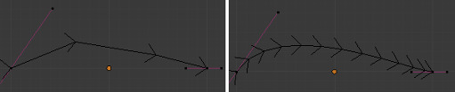Curves with a resolution of 3 (left) and 12 (right).
- Twisting
A 3D Curve has Control Points that are not located on the Curve’s local XY plane. This gives the Curve a twist which can affect the Curve normals. You can alter how the twist of the Curve is calculated by choosing from Minimum, Tangent and Z-Up options from the select menu.
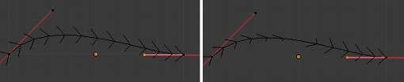Curves with a twist of minimum (left) and tangent (right).
- Fill
Fill determines the way a Curve is displayed when it is Beveled (see below for details on Beveling). When set to Half (the default) the Curve is displayed as half a cylinder.
- Fill Deformed
- Fills the curve after applying all modification that might deform the curve (i.e. shape keys and modifiers).
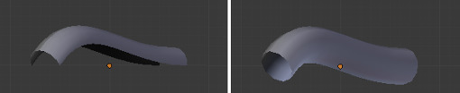Curves with a fill of half (left) and full (right).
- Path/Curve-Deform
- These options are primarily utilized when using a Curve as a Path or when using the Curve Deform property. The Radius, Stretch and Bounds Clamp options control how Objects use the Curve and are dealt with in more detail in the appropriate links below.
Geometry¶

Curves Geometry panel.
- Modification
- Offset
- By default, text Objects are treated as curves. The Offset option will alter the space between letters.
- Extrude
- Will extrude the curve along both the positive and negative local Z axes.
- Bevel
- Depth
Changes the size of the bevel.
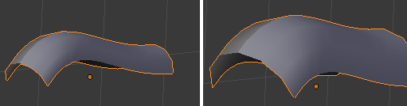A Curve with different Bevel depths applied.
- Resolution
Alters the smoothness of the bevel.
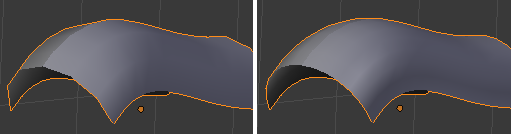A Curve with different resolutions applied.
- Taper Object
Tapering a Curve causes it to get thinner towards one end. You can also alter the proportions of the Taper throughout the tapered object by moving/scaling/rotating the Control Points of the Taper Object. The Taper Object can only be another Curve. Editing the Handles and Control Points of the Taper Object will cause the original Object to change shape.
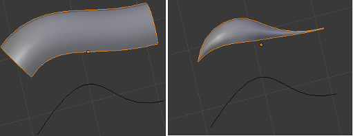A Curve before (left) and after (right) a Bézier Curve Taper Object was applied.
- Bevel Object
Beveling a Bézier Curve with a Bézier Curve as the Bevel Object generally gives it the appearance of a plane, while using a Bézier Circle as the Bevel Object will give it the appearance of a cylinder. The Bevel Object can only be another Curve. Editing the Handles and Control Points of the Bevel Object will cause the original Object to change shape. Given the options available, it is best to experiment and see the results of this operation.
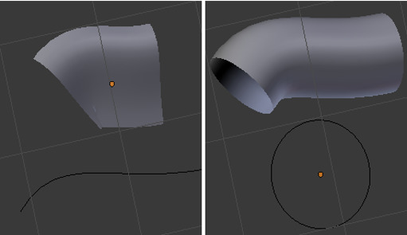A Curve with the Bevel Object as a Bézier Curve (left) and as a Bézier Circle (right).
- Fill Caps
- Seals the ends of a beveled Curve.
- Map Taper
For Curves using a Taper Object and with modifications to the Start/End Bevel Factor the Map Taper option will apply the taper to the beveled part of the Curve (not the whole Curve).
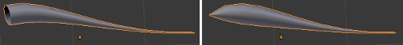A Curve without (left) and with (right) Map Taper applied.
- Start Bevel Factor and End Bevel Factor
These options determine where to start the Bevel operation on the Curve being beveled. Increasing the Start Bevel Factor to 0.5 will start beveling the Curve 50% of the distance from the start of the Curve (in effect shortening the Curve). Decreasing the End Bevel Factor by 0.25 will start beveling the Curve 25% of the distance from the end of the Curve (again, shortening the Curve).
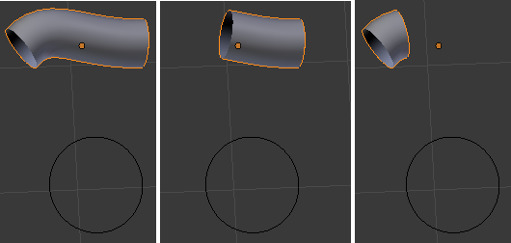A Curve with no Bevel factor applied (left), with a 50% Start Bevel Factor (middle) and with a 25% End Bevel Factor (right).
Path Animation¶
The Path Animation settings can be used to determine how Objects move along a certain path.
- Frames
- The number of frames that are needed to traverse the path, defining the maximum value for the Evaluation Time setting.
- Evaluation Time
- Parametric position along the length of the curve that object following it should be at (the position is evaluated by by dividing by the Path Length value).
- Follow
- Make the curve path children rotate along the path.
Active Spline¶

Curves Active Spline panel.
The Active Spline panel becomes available during Edit Mode.
- Cyclic
- Closes the Curve.
- Resolution
- Alters the smoothness of each segment by changing the number of subdivisions.
- Interpolation
- Tilt
- Alters how the tilt of a segment is calculated.
- Radius
- Alters how the radius of a Beveled Curve is calculated.
The effects are easier to see after Shrinking/Fattening a control point
Alt-S. - Smooth
- Smooths the normals of the Curve.
NURBS Curves¶
NURBS Active Spline panel.
- Knots
One of the characteristics of a NURBS object is the knot vector. This is a sequence of numbers used to determine the influence of the control points on the curve. While you cannot edit the knot vectors directly, you can influence them through the Endpoint and Bézier options in the Active Spline panel. Note that the Endpoint and Bézier settings only apply to open NURBS curves.
- Cyclic
Makes the NURBS curve cyclic.
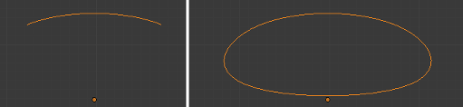A NURBS curve with Cyclic applied.
- Bézier
- Makes the NURBS curve act like a Bézier curve.
- Endpoint
Makes the curve contact the end control points. Cyclic must be disabled for this option to work.
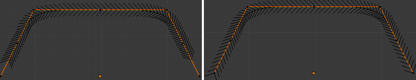A NURBS curve with Endpoint enabled.
- Order
The order of the NURBS curve determines the area of influence of the control points over the curve. Higher order values means that a single control point has a greater influence over a greater relative proportion of the curve. The valid range of Order values is 2-6 depending on the number of control points present in the curve.
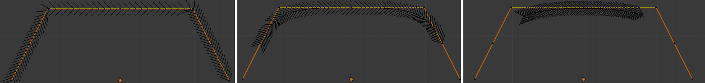NURBS curves with orders of 2 (left), 4 (middle) and 6 (right).